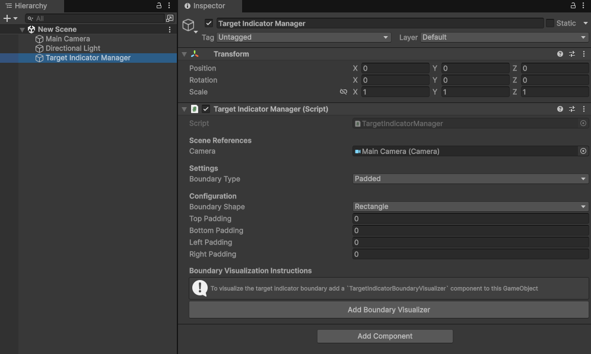
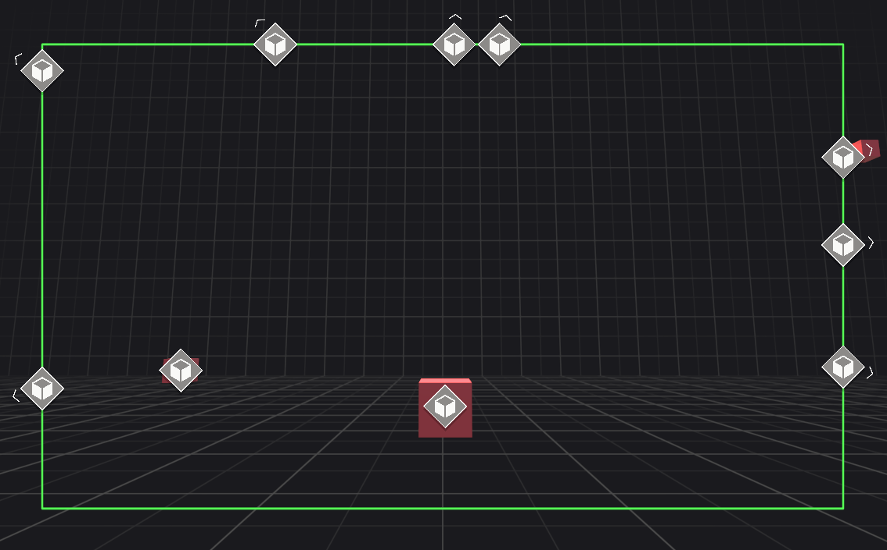
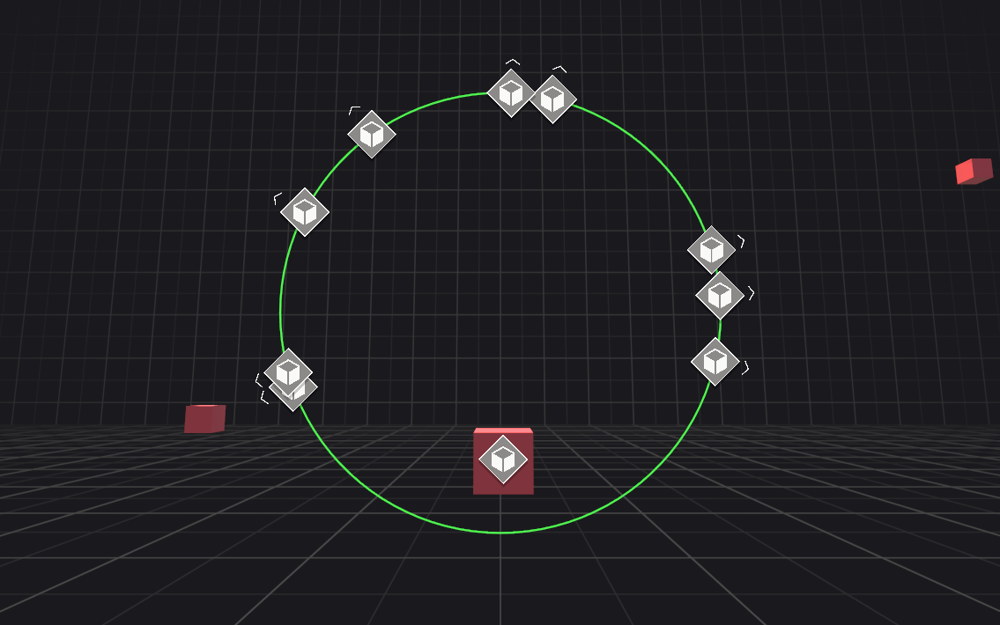
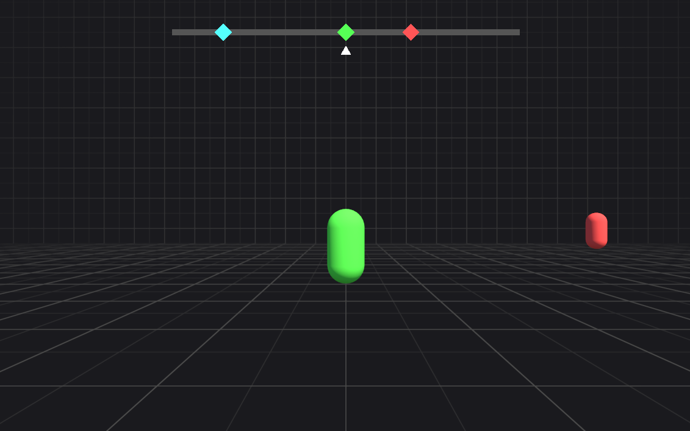
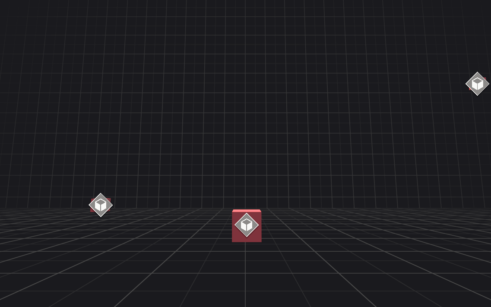
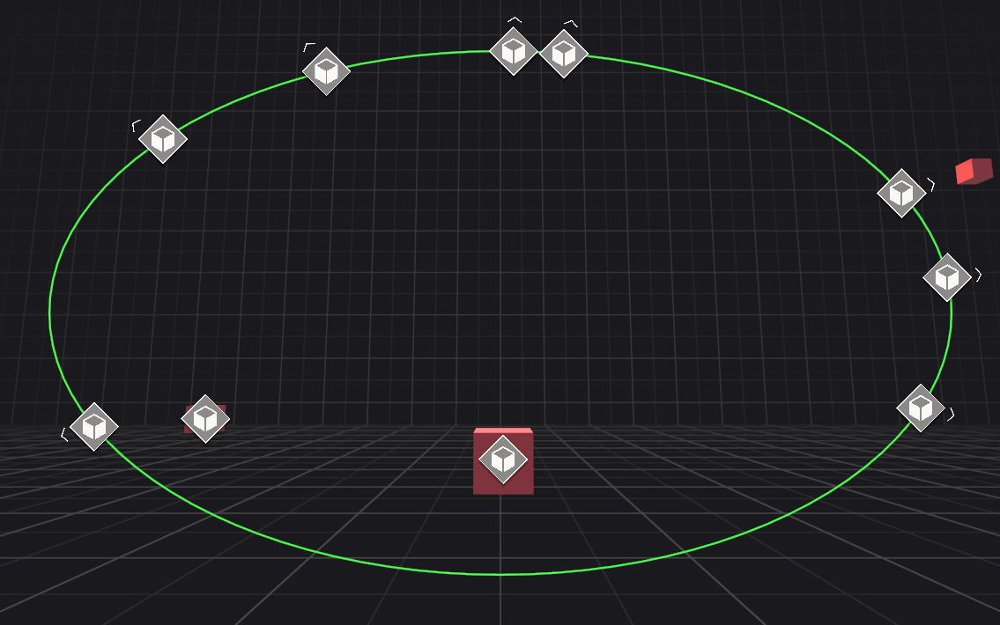
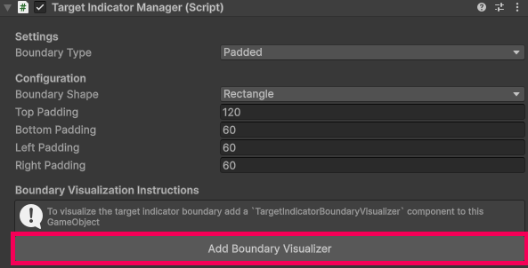
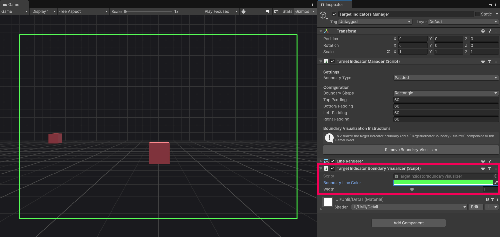

Target Indicator Manager
The TargetIndicatorManager component is central to Target Indicators. It manages the lifecycle of all tracked targets, handling their addition, updates, and removal. This manager generates the screen-space data needed to position visual indicators.
The following sections explain how to use the target indicator manager.
Important
By default Target Indicators does not display any UI on the scene. It only returns screen coordinates for you to display your own indicators. If you are interested in a prebuilt visualized indicator you can import the sample's starter assets which provides a solution with Unity UI. Refer to the samples docs to learn more about how to configure the prebuilt indicators.
Scene Setup
Add the TargetIndicatorManager to a GameObject in the hiearchy and edit the configuration to your projects needs.

Configure the Target Indicator Manager
The TargetIndicatorManager has several properties that can be edited within the inspector or set at runtime. The following sections explains each property in more detail.
Camera
The camera is used for calculating the screen space coordinates of each target. By default, when the TargetIndicatorManager component is added or reset it will assign the camera in your scene with the MainCamera tag. If no camera has the MainCamera tag it will fallback to using the first camera in the scene. Assign the camera that you will be using to display target indicators.
To assign the camera reference at runtime, use TargetIndicatorManager.Camera.
Boundary type
The BoundaryType property controls how visual indicators behave when their target moves off-screen. For example indicators can be bound by the screen edges or have no boundary at all.
There are four boundary types:
Padded
This boundary type clamps target indicators to the screen edges while applying an adjustable padding defined in pixels. Indicators automatically adapt to changes in screen size, maintaining their padding and visibility.

Padded boundary is common for indicating waypoints, enemies, and points of interest.
Absolute
This boundary type clamps target indicators to the screen with a fixed size defined in pixels. It will not change if the screen size changes.

Absolute boundary is common in first person games where you want to indicate the direction a player or other character is attacking from when not directly in front of the user.
Compass Tape
This boundary type maps off-screen targets to a horizontal range, simulating a compass tape. Unlike other boundary types, it does not provide pixel-based screen coordinates. Instead, it offers a normalized value between 0 and 1 for the TargetIndicator.ScreenPose.x component, representing the target's horizontal direction on the tape.

To learn more about how to use the screen pose for a target indicator on a compass tape refer to Interpret the screen pose.
Unbounded
This boundary type places visual indicators directly at the target's screen pose without any clamping. Consequently, if the target moves off-screen, its corresponding visual indicator will also move off-screen.

Boundary shape
When using Padded or Absolute boundary types, configure the shape of the boundary with the BoundaryShape property.
There are two boundary shapes:
Rectangle
TargetIndicatorManager.Ellipse represents the rectangle data generated by the currnet configuration.
Ellipse

TargetIndicatorManager.Ellipse represents the ellipse data generated by the current configuration.
Padding
When BoundaryType is set to Padded, you can define the pixel distance between the screen edges and the visual indicator's boundary.
Padding can be independently configured for the Top, Bottom, Left, and Right edges. These properties are ignored if BoundaryType is not Padded.
Size
When BoundaryType is set to Absolute, the boundary's dimensions are defined by the Width and Height properties.
Unlike other boundary types, this size remains fixed and does not adapt to changes in screen size. These properties are ignored if BoundaryType is not Absolute.
Visualize the boundary
You can visualize your current configuration at edit time and at runtime with the TargetIndicatorBoundaryVisualizer component.
The following sections describe how to use the TargetIndicatorBoundaryVisualizer to visualize the configured boundary.
Add visualizer
Attach the TargetIndicatorBoundaryVisualizer component by clicking the Add Boundary Visualizer button on the bottom of the target indicator manager component.

Once added, you can remove the visualizer by clicking the Remove Boundary Visualizer button.
Note
Only BoundaryType.Padded and BoundaryType.Absolute can be visualized with the built in visualizer.
Edit visualizer
Boundary line color and line width properties are available in the inspector to modify the boundary visualizer. This is useful if you have multiple target indicator managers and need to distinguish easily between them.

API
The following sections describe how to use the target indicator manager API.
Add a target
To add a target to track use TryAddTarget as shown in the following code example:
public void TryAddTargetExample(TargetIndicatorManager manager, Transform target)
{
var wasAdded = manager.TryAddTarget(target, out var targetIndicator);
if (!wasAdded)
{
// Failed to add target because max limit of targets is reached.
// Handle error.
return;
}
// Successfully added target.
}
The max number of targets that can be tracked at once is 100. TryAddTarget can only fail if you try to add more than 100 targets. To get the current number of tracked targets use TrackedTargetsCount. If you need more than 100 (god bless), you can use multiple target indicator managers.
Keep track of the returned TargetIndicator.TrackedIndicatorId in the out parameter to know which target indicator corresponds to a target.
Remove a target
To remove a target from being tracked use TryRemoveTarget as shown in the following code example:
public void TryRemoveTargetExample(TargetIndicatorManager manager, TargetIndicatorId id)
{
var wasRemoved = manager.TryRemoveTarget(id);
if (!wasRemoved)
{
// Failed to remove target because the target indicator ID was invalid.
// Handle error.
return;
}
// Successfully removed target.
}
Removing a target can only fail if you pass an invalid TargetIndicatorId.
Remove all targets
To remove all targets at once use RemoveAllTargets as shown in the following code example:
public void RemoveAllTargetsExample(TargetIndicatorManager manager)
{
manager.RemoveAllTargets();
// Successfully removed all tracked targets.
}
Tip
If you just want to stop receiving updates you can disable the TargetIndicatorManager component. Re-enabling it will resume tracking targets.
Get a target
To check if a target indicator is being tracked use TryGetTargetIndicator as shown in the following code example:
public void GetATargetIndicatorExample(
TargetIndicatorManager manager, TargetIndicatorId id)
{
var didGet = manager.TryGetTargetIndicator(id, out var targetIndicator);
if (!didGet)
{
// Failed to get target because target indicator ID was invalid.
// Handle error.
return;
}
// Successfully received target indicator.
}
Get screen pose
If you want to get the screen pose of any world space position that adherers to your current boundary configuration, use GetScreenPose. This can be useful if you want to control your own life cycle, or if you only need a one time update, or you need infrequent updates for a target's screen pose.
The following code example shows you how to use GetScreenPose:
public void GetScreenPoseExample(
TargetIndicatorManager manager, Vector3 worldSpacePosition)
{
var screenPose = manager.GetScreenPose(worldSpacePosition, out var isOutsideBoundary);
// screenPose.position.x = horizontal axis coordinate in screen space (pixels).
// screenPose.position.y = vertical axis coordinate in screen space (pixels).
// screenPose.position.z = depth from the camera in world space (meters).
// screenPose.rotation = direction to target in screen space.
// isOutsideBoundary = true if the screenPose.position is outside the configured boundary.
// The depth from the camera is ignored in this check.
}
Is outside boundary
Each TargetIndicator contains an IsOutsideBoundary property that you can use to know if a target indicator is outside the bounds of the current configured boundary when the TargetIndicator was created. If you want to know if any Vector3 position is outside the current boundary configuration use TargetIndicatorManager.TargetIndicators.TargetIndicatorManager.IsOutsideBoundary as shown in the following example:
public void IsOutsideBoundaryExample(
TargetIndicatorManager manager, Vector3 worldSpacePosition)
{
var isOutsideBoundary = manager.IsOutsideBoundary(worldSpacePosition);
// isOutsideBoundary = true if the screen pose coordinates are outside the
// configured boundary. The depth from the camera is ignored in this check.
}
Important
For BoundaryType.CompassTape and BoundaryType.Unbounded the IsOutsideBoundary property will always be false. BoundaryType.Compass requires knowledge about your specific compass tape setup to determine if it's outside the boundary.sTape
Refer to samples as a reference for how you can check if the target indicator is outside of the boundary.
Life cycle events
While enabled, the TargetIndicatorManager component will check for changes every frame. If any anchors were added, updated, or removed, TargetIndicatorManager will invoke TargetIndicatorsAdded, TargetIndicatorsUpdated, and TargetIndicatorsRemoved events respectively.
Each event passes a ReadOnlySpan
The following code example shows how you can subscribe to these events and iterate over the spans they pass:
public void LifeCycleExample(TargetIndicatorManager manager)
{
manager.TargetIndicatorsAdded += OnTargetIndicatorsAdded;
manager.TargetIndicatorsUpdated += OnTargetIndicatorsUpdated;
manager.TargetIndicatorsRemoved += OnTargetIndicatorsRemoved;
}
void OnTargetIndicatorsAdded(ReadOnlySpan<TargetIndicator> added)
{
foreach (var targetIndicator in added)
{
var screenPose = targetIndicator.ScreenPose;
}
}
void OnTargetIndicatorsUpdated(ReadOnlySpan<TargetIndicator> updated)
{
foreach (var targetIndicator in updated)
{
var updatedScreenPose = targetIndicator.ScreenPose;
}
}
void OnTargetIndicatorsRemoved(ReadOnlySpan<TargetIndicatorId> removed)
{
foreach (var targetIndicatorId in removed)
{
// TargetIndicatorId was removed.
}
}
You can disable the TargetIndicatorManager component to stop receiving life cycle events and control your own life cycle and rely on the TargetIndicatorManager exclusively for pose and boundary checks.
Using multiple target indicator managers
Some applications might require multiple boundary types or multiple configurations. You can have multiple TargetIndicatorManager components in your scene to get more complex designs. For example if you use BoundaryType.CompassTape you will only get indicators to display on the compass tape but might not know what target they correspond to.
You can have a second TargetIndicatorManager that is configured to use BoundaryType.Unbounded that marks the same target with a matching icon as used in your compass tape visualizer to indicate which target represents which marker in your compass tape indicator. The Samples provides an example of how to configre multiple target indicator managers.